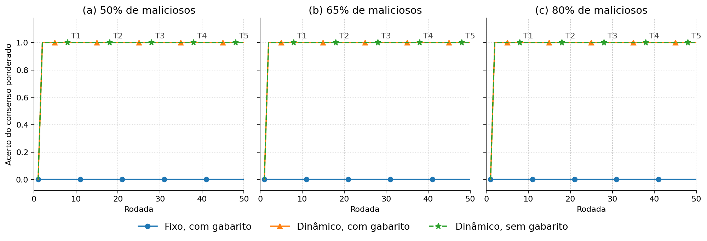
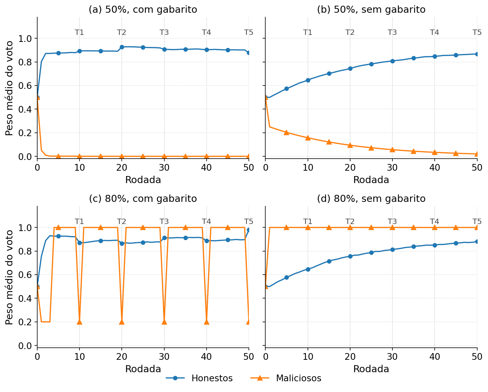

Entra · 0% e 25%
Lamport e o PBFT testam acordo com menos de um terço de faltosos. EigenTrust começa em 0% e sobe de 10 em 10. Aqui a acurácia de teste é 1 no fixo e no dinâmico com gabarito.
Cenários escolhidos a partir dos trabalhos relacionados, os dois gráficos já medidos e o que cada variável da reputação significa. 50 nós, 50 rodadas, cinco repetições. Nada disso é uma execução nova.
A regra da reunião foi esta: o trabalho X testa um comportamento; se o simulador já executa esse comportamento, o cenário entra. O que a literatura não avalia, ou o que pediria um mecanismo novo, fica de fora.
Raza, Badidi e El Harrouss (2026) não desenham uma faixa: injetam seis clientes maliciosos e suspendem quem cai de reputação. Chen (2024), AutoDFL (2025) e ur Rehman et al. (2023) não publicam uma varredura de 50% a 80% que dê para citar. Por isso eles não puxam o cenário para cima da maioria.
Lamport e o PBFT testam acordo com menos de um terço de faltosos. EigenTrust começa em 0% e sobe de 10 em 10. Aqui a acurácia de teste é 1 no fixo e no dinâmico com gabarito.
Ainda está dentro da faixa do EigenTrust e já passou do BFT clássico. É o primeiro empate da maioria simples. No fixo a acurácia de teste é 0. No dinâmico sem gabarito o 1 vem da anulação de quórum na rodada 1.
O PBFT troca o líder faltoso. Aqui o líder malicioso grava peso 1 para o conluio e 0 para os demais. É o ataque já executado no dinâmico.
O EigenTrust usa alguns pares pré-confiáveis para quebrar o coletivo. Aqui a âncora é o gabarito: nas três primeiras rodadas do dinâmico com gabarito, e nas rodadas 10, 20, 30, 40 e 50. Sem gabarito essa âncora não age.
O PBFT confirma por outra réplica, não só pelo líder. Na matriz dinâmica o veto não anula a rodada honesta, e o auditor perde reputação. Cabe numa frase. Não pede código novo.
Não é o que os trabalhos costumam avaliar. A maioria simples já é 0: 32 contra 18, e 40 contra 10. Sem gabarito, o acerto 1 é a cópia dos honestos, não um livro único da rede.
Quarentena, vizinho julgando vizinho, bloquear todo ex-líder, honesto instável no artigo, espalhar os maliciosos no grafo, líder sempre honesto, e malicioso que acerta no começo para subir. A quarentena mais próxima da lista é a de Raza et al.: cortam a reputação e suspendem por algumas rodadas.
Não. Só o líder da rodada anterior fica de fora. Na seguinte ele pode liderar de novo. A rede permanece com 50 nós.
Já foi medido: 0%, 25%, 50%, 65% e 80%.
Vencem a resposta da rodada 2 em diante, até 80%. Vencem o score dentro de um livro só em 50%. Em 65% e em 80% o 1 é a cópia dos 18 e dos 10 honestos.
Não. Com gabarito, o empurrão das três primeiras rodadas é o gabarito, com α = 0,8. Sem gabarito, é a recusa do registro forjado mais o quórum.
Acerta com probabilidade 0,9. O malicioso erra sempre e vota 999.
Círculo azul: fixo, com gabarito. Triângulo laranja: dinâmico, com gabarito. Estrela verde: dinâmico, sem gabarito. As verticais T1 a T5 são as rodadas 10, 20, 30, 40 e 50.

Círculo azul: honestos. Triângulo laranja: maliciosos. O fixo não está nesta figura. Em 50% as duas curvas estão na mesma cadeia. Em 80% cada curva é a média na cópia daquele grupo.

Uma rodada com gabarito e α = 0,8 deixa cada malicioso com no máximo 0,2. Em 80% isso soma 40 × 0,2 = 8, contra cerca de 6,5 do lado dos 10 honestos. Essa conta não põe o honesto à frente dentro do mesmo livro.
Todo nó começa em 0,5. Score alto significa “concordou com a regra daquela rodada”. Enquanto o consenso for o dos honestos, o score alto é o do honesto. Se o conluio passa a ser o consenso, a mesma conta sobe o score do conluio.
| Símbolo | O que é | Valor aqui |
|---|---|---|
| Ri(t) | Reputação do nó antes da rodada. É o peso do voto dessa rodada. | Entre 0 e 1 |
| α | Quanto a rodada atual mexe no histórico. | Fixo: 0,3. Dinâmico: 0,05 no consenso, 0,8 no gabarito, 0,5 na punição. |
| si(t) | 1 se a resposta conta como certa para aquela regra; 0 se erra. | Consenso nas rodadas normais. Gabarito nas três primeiras do dinâmico com gabarito e nas rodadas 10, 20, 30, 40 e 50. |
| Reputação de eleição | O outro score. Só elege o líder e fecha o quórum. | Na rodada normal aceita, não se mexe. |
O consenso ponderado fica com a resposta de maior soma de pesos. A maioria simples conta votos. No empate, os dois ficam com o menor número, e o 999 perde esse desempate.
O PBFT e Lamport testam acordo com menos de um terço de faltosos; o EigenTrust testa arquivo inautêntico, sozinho ou em coletivo, de 0% a 70%, com alguns pares pré-confiáveis; Raza et al. cortam a reputação e suspendem o cliente malicioso em vez de deixá-lo votar. Optamos por 0%, 25% e 50% de conluio no valor 999, com líder que forja o registro, com e sem gabarito, porque esses são os comportamentos que esses trabalhos avaliam e que o simulador já executa. Medimos também 65% e 80% para localizar o ponto em que a maioria simples deixa de acertar e em que, sem gabarito, o livro único se divide. Não adotamos quarentena nem opinião de vizinho: a primeira não está no protocolo atual, e a segunda mudaria o score global do livro, que é o objeto da comparação com o orquestrador fixo.
Lido em resumo, HTML ou PDF aberto. Onde o PDF é pago, a linha diz isso.
| Trabalho | Malicioso | Fração | Reputação |
|---|---|---|---|
| Lamport et al., 1982 | Mensagem arbitrária | n ≥ 3f+1, menos de 1/3 | Não há |
| Castro e Liskov, 1999 | Réplica arbitrária; líder faltoso é trocado | No máximo f, com n ≥ 3f+1 | Troca de líder, sem score |
| Kamvar et al., 2003 | Arquivo inautêntico, sozinho ou em coletivo, com disfarce | 0% a 70%. Tabela-base: 60 bons, 42 maliciosos, 3 pré-confiáveis | Deixa de escolher quem tem confiança baixa. O par bom erra cerca de 5% dos uploads |
| Raza, Badidi e El Harrouss, 2026 | Envenenamento; cliente que falta rodada | Clientes 25–30, a partir da rodada 3. Não é varredura até 80% | Corta a reputação e suspende. Volta se o score passa de 0,6 |
| Chen et al., 2024 | Compartilhador malicioso na trajetória | O HTML aberto não fixa um percentual | Opinião do vizinho. Não é quarentena |
| ur Rehman et al., 2023 | Participação maliciosa | O resumo fala em ataque abaixo de 5%. A fração injetada não foi lida: PDF pago | Crédito, não suspensão |
| AutoDFL, 2025 | Sybil, carona, conluio, identidade nova | Premissa f < n/3. Sem varredura de 50% a 80% | Identidade nova zera o histórico |
| Bouhata et al., 2025; Wei e Liu, 2025 | Revisão de ataque no treino | Não é um experimento com uma fração | Não é mecanismo deste trabalho |